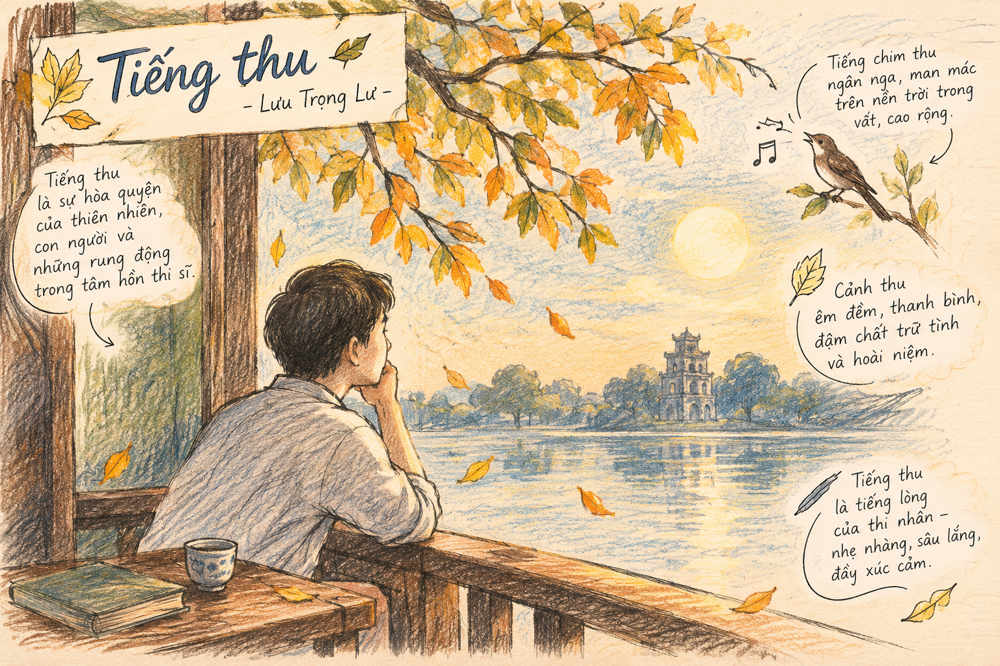

Qua những bài đã học về thơ, hãy chia sẻ những điều bạn thấy thú vị và khó khăn khi tiếp cận một bài thơ trữ tình.
1. Tác giả Lưu Trọng Lư (1911 – 1991)
Sinh tại huyện Bố Trạch, tỉnh Quảng Bình, được xem là một trong những thi sĩ đầu tiên khởi xướng và tích cực cổ vũ cho phong trào Thơ mới. Trong phong trào Thơ mới, Lưu Trọng Lư được ghi nhận là một hồn thơ sầu mộng, ngôn ngữ thơ giản dị, tự nhiên, dễ gợi sự cảm động.
Tác phẩm chính: Tiếng thu (thơ, 1939), Người son nhân (1933), Chiếc cảng xanh (1941), Khói lam chiều (1941), Tỏa sáng đôi bờ (1959), Hồng Gấm, tuổi hai mươi tuổi rồi (1973), Bao la sầu (1989).
2. Tác giả Chu Văn Sơn (1962 – 2019)
Là nhà nghiên cứu văn học Việt Nam hiện đại. Các tác phẩm chính đã xuất bản: Ba đỉnh cao Thơ mới: Xuân Diệu, Nguyễn Bính, Hàn Mặc Tử (2005), Thơ – điệu hồn và cấu trúc (2007), Tự tình cùng cái Đẹp (2019).
Định hướng tiếp nhận bài thơ "Tiếng thu":
“Thu là thơ của đất trời, thơ là thu của lòng người”. Bài thơ Tiếng thu là sự đồng vọng tinh tế giữa “hồn thơ” và “hồn thu”, tạo nên một bản hòa âm ngôn từ đặc sắc.
1 Quan niệm về thiên nhiên: Thơ cổ điển và Thơ mới
2 Cấu trúc ngôn từ mang tính nhạc trong "Tiếng thu"
Bài thơ gồm 3 khổ tương ứng với 3 câu hỏi (Em không nghe...), sử dụng hệ thống vần bằng và vần trắc quyện hòa nhuần nhuyễn, tạo nên âm điệu êm đềm, thanh thoát mà tiêu tao.
[Khung hình minh họa số 1]

Đường dẫn tệp: src="h1.png"
Em có biết
Lưu Trọng Lư được đánh giá là một trong những nhà thơ tài hoa bậc nhất của phong trào Thơ mới với phong cách nghệ thuật đượm buồn, giàu chất nhạc và cảm xúc chân thành.
Em có thể
Vận dụng lý luận văn học của Chu Văn Sơn để phân tích các bài thơ trữ tình khác trong chương trình Ngữ văn trung học phổ thông.
Lưu ý
Cần nắm vững cách phân tích yếu tố âm điệu, nhịp điệu và hình ảnh trong một tác phẩm thơ trữ tình theo đúng định hướng đổi mới phương pháp kiểm tra đánh giá.
Ví dụ 1: Theo phân tích của tác giả, "tiếng thu" và "tiếng thơ" tương ứng với những bình diện nào trong bài thơ của Lưu Trọng Lư?
Lời giải chi tiết: "Tiếng thu" là âm thanh huyền diệu của tạo vật, của thiên nhiên mùa thu (thổn thức, rạo rực, xào xạc). "Tiếng thơ" là âm điệu, cấu trúc ngôn từ chứa chan tính nhạc do nhà thơ cất lên để cộng hưởng, đồng điệu với thiên nhiên.
Ví dụ 2: Mục hoạt động (hình bàn tay) - Nêu vấn đề về sự khác biệt giữa thơ cổ điển và Thơ mới.
Hướng giải quyết: Thơ cổ điển xem tĩnh là gốc, miêu tả thiên nhiên miên viễn, thanh vắng. Thơ mới tìm đến sự xôn xao, khám phá sự sống tiềm tàng bên trong lòng tạo vật qua sự tương ứng vi diệu giữa tâm hồn cá nhân và vạn vật.
Câu 1: Tác giả của văn bản "Bản hòa âm ngôn từ trong Tiếng thu..." là ai?
Câu 2: Bài thơ "Tiếng thu" do nhà thơ nào sáng tác?
Câu 3: Theo Chu Văn Sơn, âm hưởng đặc trưng nhất vang lên từ đáy hồn Thơ mới là gì?
Câu 4: Bài thơ "Tiếng thu" thuộc thể thơ nào?
Câu 5: Từ tượng thanh duy nhất xuất hiện trong bài thơ "Tiếng thu" là gì?
Câu 6: Theo tác giả Chu Văn Sơn, cấu trúc ngôn từ của bài thơ "Tiếng thu" tự nó chia thành mấy phần nội dung?
Câu 7: Cụm từ nào được lặp lại ở đầu mỗi khổ thơ trong "Tiếng thu"?
Câu 8: Quan niệm thẩm mỹ về cái "tĩnh" là đặc trưng của loại thơ nào?
Câu 9: Theo bài viết, âm hưởng chung của bài thơ "Tiếng thu" nghiêng về loại âm nào?
Câu 10: Hình ảnh nào xuất hiện ở cuối khổ thơ thứ hai của "Tiếng thu"?
Bài 1: Phân tích ngắn gọn ý nghĩa nhan đề và sự kết hợp giữa "tiếng thu" và "tiếng thơ" trong bài viết của Chu Văn Sơn.
Lời giải chi tiết:
- Nhan đề cho thấy sự giao hòa giữa thiên nhiên và tâm hồn con người.
- "Tiếng thu" và "tiếng thơ" hòa quyện vào nhau: âm thanh của đất trời trở thành nhịp đập của hồn thơ, qua cấu trúc ngôn từ giàu tính nhạc để ngân lên đầy sức gợi cảm.
Bài 2: Làm rõ đặc sắc nghệ thuật qua hệ thống từ láy và âm điệu bằng - trắc trong văn bản nghiên cứu của Chu Văn Sơn.
Lời giải chi tiết:
- Âm hưởng chung nghiêng về âm bằng tạo cảm giác êm đềm, thanh thoát.
- Các từ láy thuộc âm trắc tạo điểm nhấn ngân vang, luyến láy, làm nổi bật sự tinh tế trong cấu trúc thơ của Lưu Trọng Lư.
Bài 3: Viết đoạn văn khoảng 150 chữ chia sẻ điều làm bạn thấy thú vị nhất khi tiếp cận một bài thơ trữ tình.
Lời giải chi tiết:
Học sinh có thể tự do bày tỏ cảm nhận cá nhân, ví dụ: Sức hấp dẫn của thơ trữ tình nằm ở âm điệu, nhịp điệu và hình ảnh mang đậm dấu ấn cảm xúc chủ thể. Đọc thơ giúp ta thấu hiểu những rung động tinh vi nhất của tâm hồn con người trước thiên nhiên và cuộc đời...